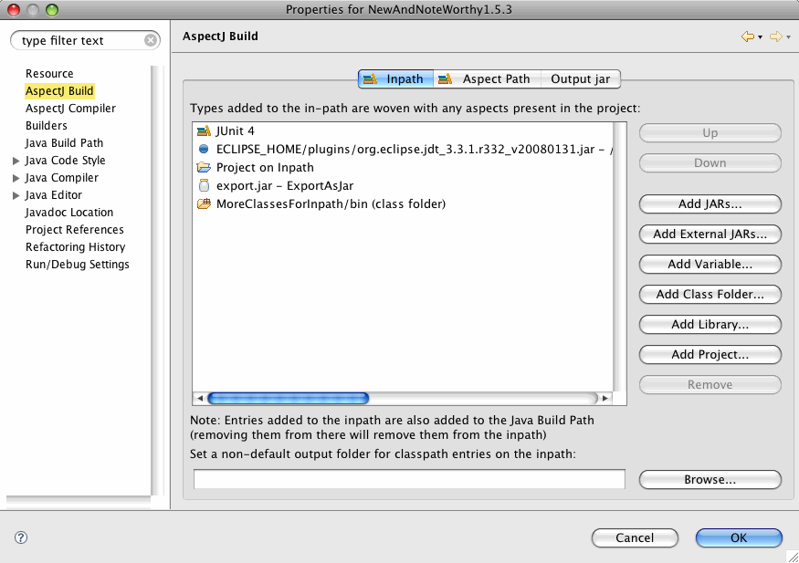
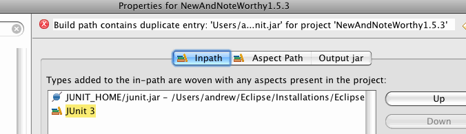
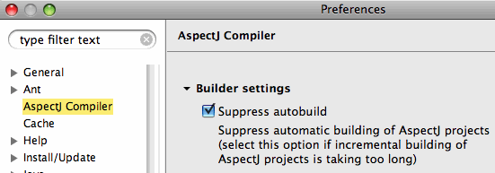
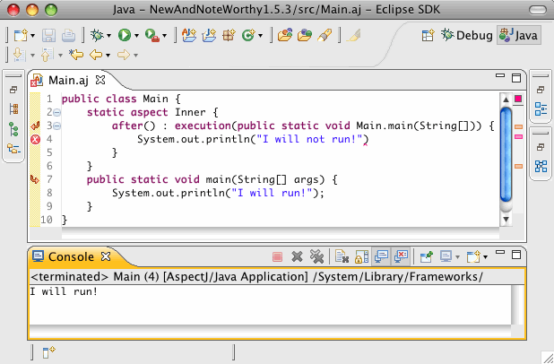
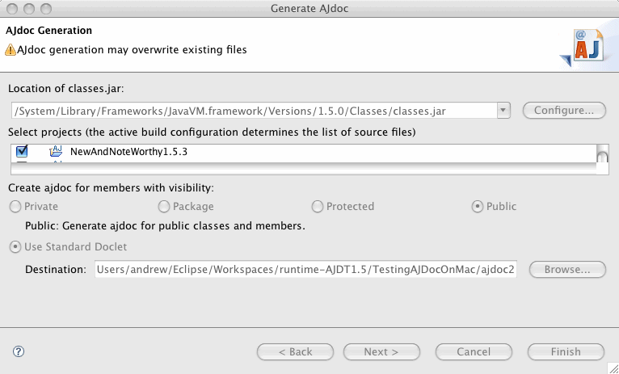

| Overview | In addition to supporting the
latest AspectJ release
(v1.6.1), the focus of this release has been general bug fixing and
maintenance. Nevertheless, there have been some significant
enhancements. Most importantly, there is now considerable flexibility
in how project in paths
and project aspect paths can be configured. This will be the last release in the 1.5.x stream other than releases that contain critical bug fixes. The 1.5.x stream targets Eclipse 3.3.x. All future releases will be part of the 1.6.x stream and target Eclipse 3.4.x. |
|
|
|
| Aspect path and In path | The aspect path and the in path for
an AspectJ project can now
contain containers, variables, and projects in addition to class
folders.  As before, adding an element to the aspect path or in path also adds it to the Java build path., and removing it from the Java build path also removes it from the aspect path or in path. |
|
|
|
| Better support for validation of classpaths | Duplicate or inconsistent classpath
entries in the in path and aspect path are now found immediately after
there is a change to the classpath.  In the above screenshot, the JUNIT_HOME
classpath variable and the
JUnit 3 classpath container both resolve
to the same jar file. This
gives rise to the error message in the status bar above.
|
|
|
|
| Inpath outfolder | It is now possible to set an
outfolder for all entries on the inpath. A new item in the in path
properties page has been added to expose this functionality to the
programmer. Use the Browse... button to choose a folder or type the folder name in directly. |
|
|
|
| Suppressing AspectJ Autobuilding | For large projects that take
advantage of aspects, it
is sometimes cumbersome to use Eclipse's autobuild feature. But, at the
same time it is not desirable to turn off autobuilding for the entire
workspace.
AJDT 1.5.3 provides an option to suppress autobuilding for AspectJ
projects only.
This option is accessible in the AspectJ Compiler preferences page.  |
|
|
|
| Incremental compilation and building of broken code | AJDT 1.5.3 includes AspectJ 1.6.1.
This version of AspectJ allows the capability to build and run broken
code. Following on from the work done to improve compilation under Eclipse in AspectJ 1.6.0 (Bug 221427)–we now support the building of 'broken code' (Bug 102733). This is something the JDT has always been doing–where code containing errors continues to build (if recovery is possible) but should the actual methods containing the errors get invoked, an exception will be thrown at runtime. A number of users typically extract large projects from their library systems, knowing that they will only partially build in their current eclipse setup, but as long at they do not invoke the code containing the errors then they expect the rest of the project to run normally. AspectJ now allows this mode of operation, and it has the additional effect that the state of the project stays consistent, albeit with known errors, and this means AspectJ will more frequently do incremental builds rather than falling back to full builds because there was a compilation error.  As shown in the screenshot above, if a compilation unit has errors in it, the compiler will still produce a valid class file for it. However, the weaver will ignore the file and its aspects will not be woven. For a description of all AspectJ 1.6.1 enhancments, see the AspectJ 1.6.1 readme. |
|
|
|
| AJDoc on Macs | AJDoc now works on the Mac. It is
necessary to select the correct location of
classes.jar. This is typically found in
/System/Library/Frameworks/JavaVM.Framework/Versions/<VERSION>/Classes/classes.jar.
There is otherwise the same behavior as on Windows. |
|
|
|
| Bug fixes | As usual this release also contains
a number of bug fixes. The full list is available in Bugzilla.
The more notable ones are:
|